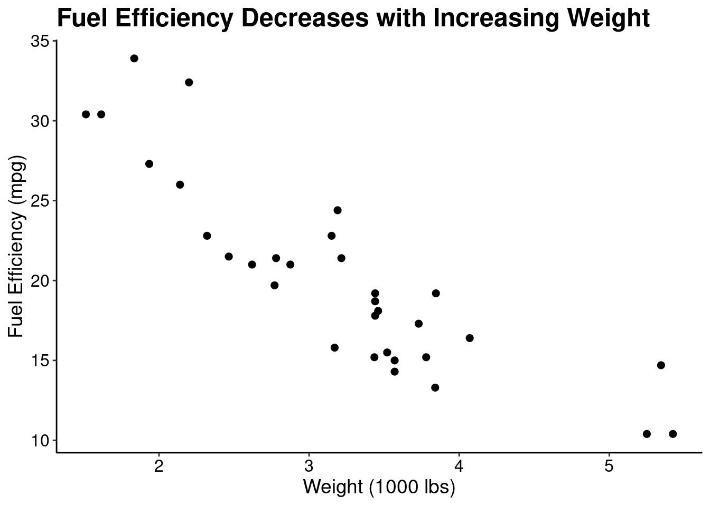
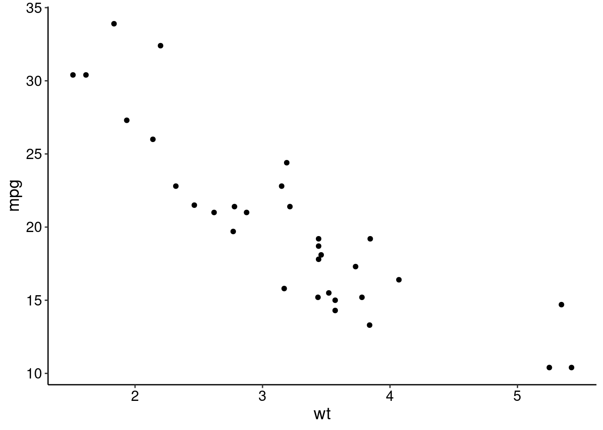
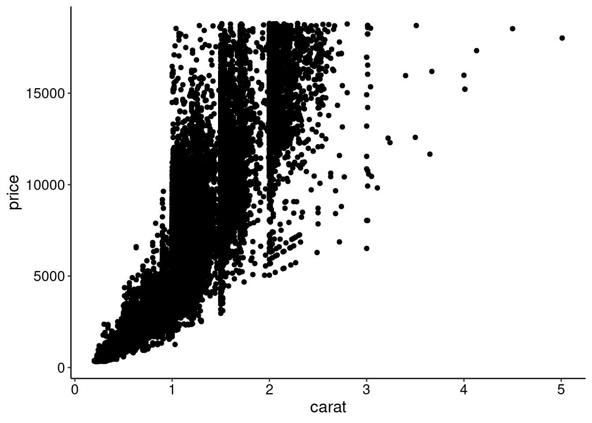
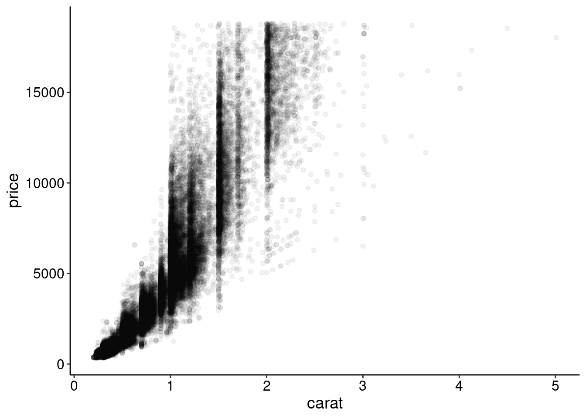
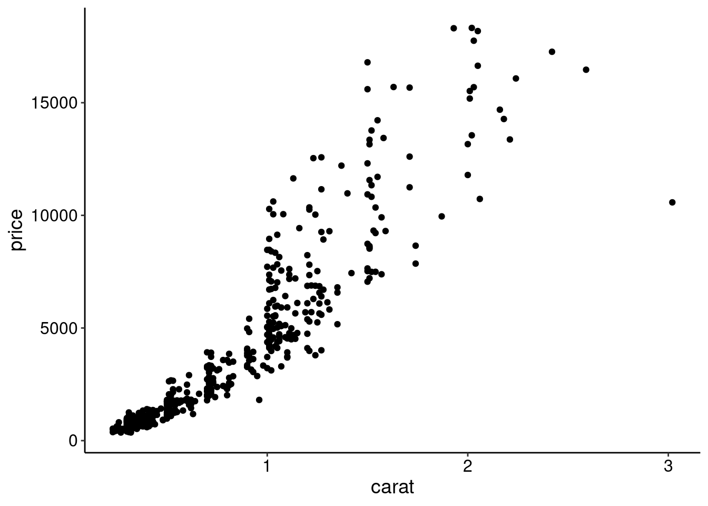
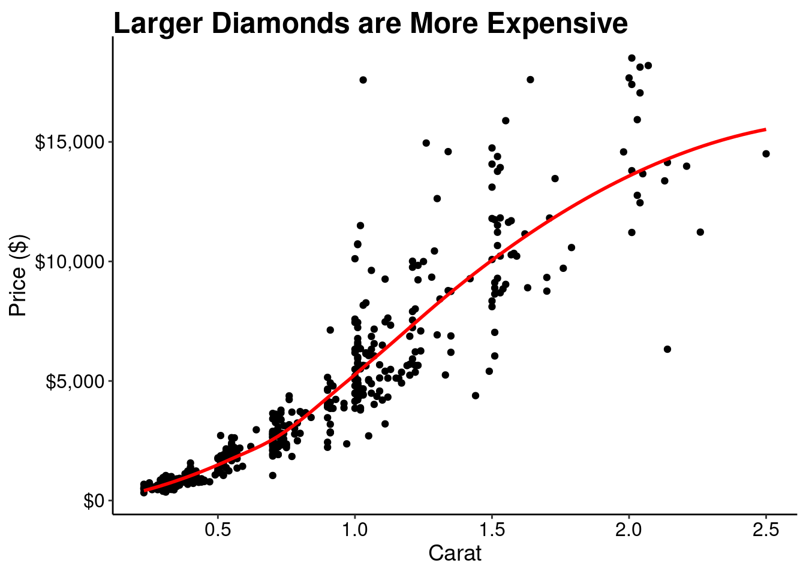
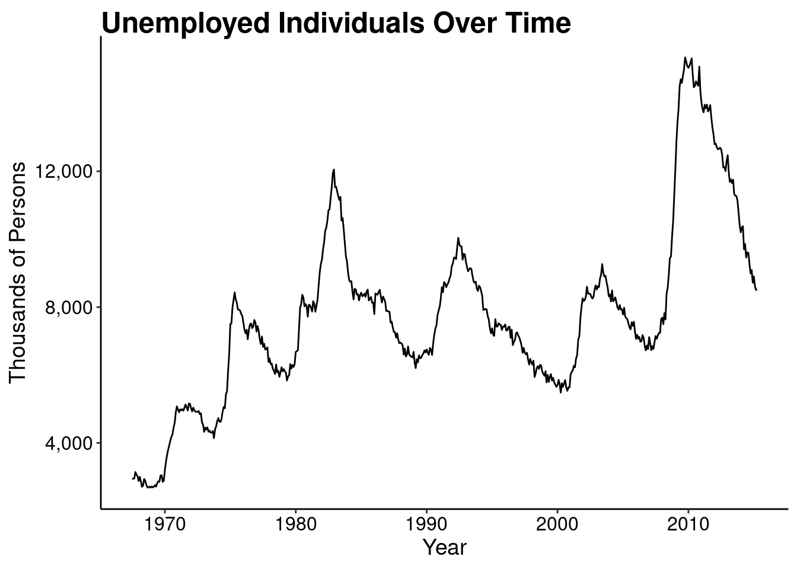
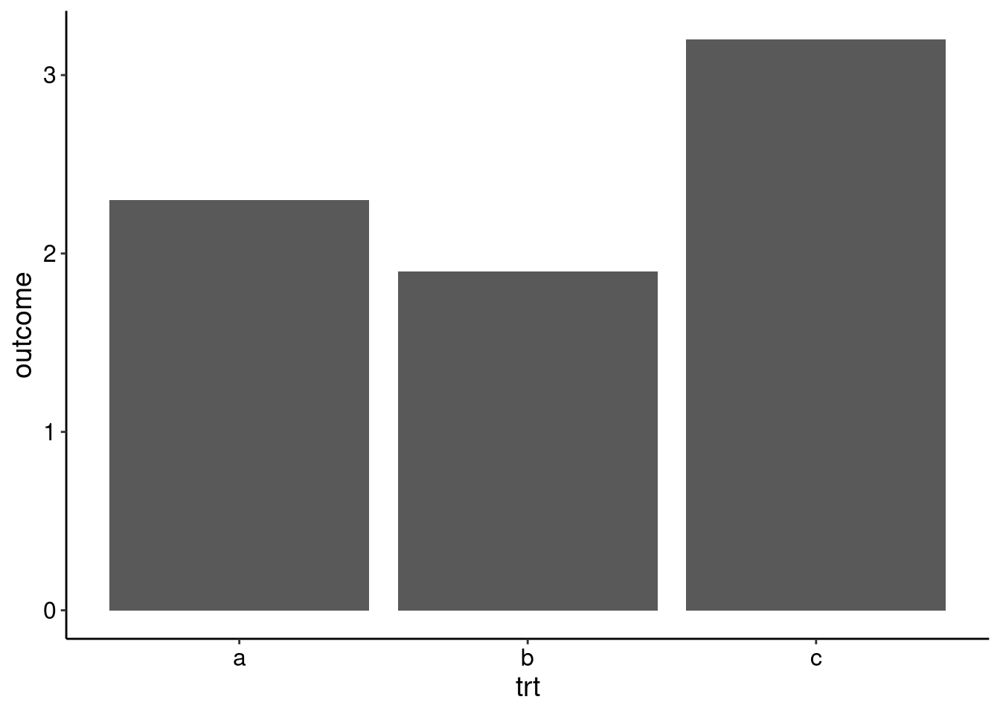
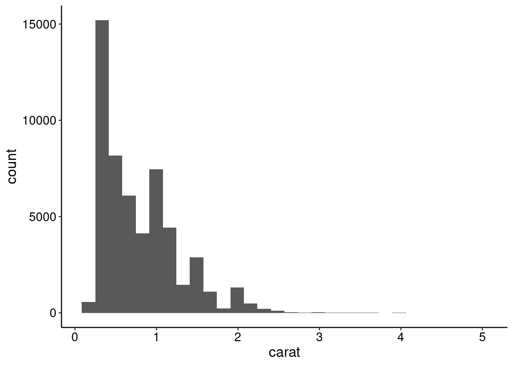

ggplot(data = mtcars, mapping = aes(x = wt, y = mpg)) +
geom_point()
Data visualization is one of the most important skills to develop as a data scientist. We use graphs, instead of tables for instance, to clearly communicate patterns, trends, and comparisons in data in a way that is inherently more interesting and informative than numbers in a grid.
Edward Tufte’s, “The Visual Display of Quantitative Information”, is probably the most famous text in all of data visualization (I’m guessing). In this text, Tufte outlines a theory of graphics and provides extensive detail regarding techniques for displaying data that maximizes clarity, precision, and efficiency. Tufte describes graphical excellence by the following points:
- show the data
- induce the viewer to think about substance…
- avoid distorting what the data have to say
- present many numbers in a small space
- make large data sets coherent
- encourage the eye to compare different pieces of data
- reveal the data at several levels of detail, from a broad overview to the fine structure
- serve a reasonably clear purpose: description, exploration, tabulation, or decoration
- be closely integrated with the statistical and verbal descriptions of the dataset
These points describe how to make good visualizations. However, some visualizations are clearly better than others. Take a look at this presentation by Andrew Gelmen and Antony Unwin. Here, they describe what makes some visualizations effective vs. what makes others ineffective and distracting. I think the main conclusion comes down to design vs decoration. Effective data visualizations are intentionally designed to communicate a point in the clearest possible way. Ineffective visualizations often contain clutter in the form of decorations, unnecessary colors, patterns, lines, and unintuitive use of shapes and sizes.
Outside of the design choices that go into creating effective visualizations, there are also other expectations required of graphs. The data points should be labelled so that the viewer immediately knows what they’re looking at. The axes should be labelled in a way that’s easy to read and do not distort the message. If using colors, the color palette should augment the visualization in a way that enhances the display of information and not only ‘looks pretty’.
There are probably thousands (millions?, infinite?) of types of visualizations in use today. However, in scientific communication, there are basically 5 types of graphs that are most commonly used; line graphs, bar graphs, histograms, scatter plots, and pie charts. Most of these have persisted in the literature (with the exception of pie charts) because of their ability to clearly and quickly display visual information about quantitative data. Many other forms of these basic charts exist primarily as variations on a theme but the core display of information remains the same.
ggplot2We’ll use the ggplot2 R package to start creating effective visualizations. ggplot2 works in a way that can feel a little strange at first, especially if you’re used to creating plots in Python with matplotlib, for example. ggplot2 implements ideas from Leland Wilkinson’s, “Grammar of Graphics”. ggplot2, breaks down a graphic into several key components that can be combined in a layered fashion. These core components typically include:
The power of this approach lies in its declarative nature. You specify what you want to plot by defining these components, rather than detailing how to draw each element step-by-step (like in matplotlib). This makes it easier to build complex visualizations and to switch between different representations of the same data with minimal changes to the code.
ggplot() constructs a plot from data, what it calls aesthetic mappings, and layers. Aesthetic mappings describe how variables in the data are mapped to visual properties (aesthetics) of geoms. geoms then determine how the data is displayed. The other parts of the ggplot object have been handled automatically (i.e. scales, stats, coordinates, and theme). These, however, can be modified to enhance the plot. Check out the ggplot2 homepage for an overview or the ggplot2 book for details.
The code below demonstrates the most basic way of creating a plot with ggplot2.
ggplot(data = mtcars, mapping = aes(x = wt, y = mpg)) +
geom_point()
This plot is okay but can be improved. Let’s improve this plot by removing the grey background and gridlines, increasing the font size of the axis ticks, improving the axis labels, and creating an informative title.
ggplot(data = mtcars, mapping = aes(x = wt, y = mpg)) +
geom_point(size = 2) + # increase the size of the points
labs( # labs() can be used to modify axis label text
title = "Fuel Efficiency Decreases with Increasing Weight",
x = "Weight (1000 lbs)",
y = "Fuel Efficiency (mpg)") +
theme_classic() + # Removes grey background and gridlines
theme( # Adjust the plot and axes titles, and text
plot.title = element_text(size = 18, face = "bold", color = "black"),
axis.title = element_text(size = 14, color = "black"),
axis.text = element_text(size = 12, color = "black")
)
If you’re going to be using the same theme elements often, it can be helpful to save those as a new custom theme. You don’t have to understand exactly how this function works right now - simply modify the arguments to the theme() function and figure this out as you improve
theme_clean <- function(...) {
ggplot2::theme_classic(...) %+replace%
ggplot2::theme(
text = ggplot2::element_text(family = "Helvetica"),
plot.title = ggplot2::element_text(size = 18, face = "bold", color = "black", hjust = 0),
axis.title = ggplot2::element_text(size = 14, color = "black"),
axis.text = ggplot2::element_text(size = 12, color = "black")
)
}
# The new theme can be applied to other plots
ggplot(data = mtcars, mapping = aes(x = wt, y = mpg)) +
geom_point() +
theme_clean()
This plot is contains the same information but more quickly and clearly communicates the message by just modifying the design. What other element could be added to this plot to make the trend more apparent?
We already showed a basic example of creating a scatter plot above. You can use that as a starting point for generating scatter plots. However, one common issue when designing scatter plots is overplotting, or, showing so many points that the data is cluttered. Below is an example of overplotting.
ggplot(diamonds, aes(carat, price)) +
geom_point() +
theme_clean()
One technique to overcome overplotting is to add transparency to the points
ggplot(diamonds, aes(carat, price)) +
geom_point(alpha = 0.05) +
theme_clean()
Another is to change the point type. Here, we plot each point as a single dot
ggplot(diamonds, aes(carat, price)) +
geom_point(shape = ".") +
theme_clean()
And another is random subsampling.
random_rows <- sample.int(nrow(diamonds), size = 500)
ggplot(diamonds[random_rows, ], aes(carat, price)) +
geom_point() +
theme_clean()
The density of the points could also be summarized. For example, explore geom_hex() or geom_density2d() geoms.
Let’s make a final version of this plot by cleaning up the background, axes, and titles. We’ll add a trendline to emphasize the relationship and we’ll also use a function to transform the y-axis to dollar format.
ggplot(diamonds[random_rows, ], aes(carat, price)) +
geom_point() +
geom_smooth(se = FALSE, color = "red") + # Adds a smooth trendline
labs(
title = "Larger Diamonds are More Expensive",
x = "Carat",
y = "Price ($)") +
scale_y_continuous( # Formats the y-axis labels as dollar amounts
labels = scales::dollar_format()
) +
theme_clean()`geom_smooth()` using method = 'loess' and formula = 'y ~ x'
Line graphs are meant to emphasize change in the y-variable over the x-variable. When designing line graphs:
ggplot has pretty good defaults for this automatically.ggplot(economics, aes(date, unemploy)) +
geom_line() +
labs(
title = "Unemployed Individuals Over Time",
x = "Year",
y = "Thousands of Persons"
) +
scale_y_continuous(labels = scales::number_format(big.mark = ",")) +
theme_clean()
We can also explore adding multiple colors to the plot to compare values. Another useful technique is to add the legend to the plot area.
econ_2 <- economics_long[!economics_long$variable %in% c("pce", "pop"), ]
ggplot(econ_2, aes(date, value01, colour = variable)) +
geom_line() +
labs(
x = "Year",
y = "Variable",
color = NULL
) +
scale_color_brewer( # Add better colors and labels
palette = "Set1",
breaks = c("psavert", "uempmed", "unemploy"),
labels = c("Savings", "Duration", "Unemployed")
) +
scale_y_continuous(labels = scales::number_format(big.mark = ",")) +
guides(color = guide_legend(position = "inside")) + # add the legend inside the plot
theme_clean() +
theme(
legend.position.inside = c(0.5, 0.85), # specify where to put the legend
legend.text = element_text(size = 12)
)
People generally use bar graphs to display a mean and some variation around the mean. Filled bar plots can also be used to show proportions.
Activity: Make this example plot better.
df <- data.frame(trt = c("a", "b", "c"), outcome = c(2.3, 1.9, 3.2))
ggplot(df, aes(trt, outcome)) +
geom_col() +
theme_clean()
Histograms are used to show distributions of data with their relative frequencies.
Activity: Make this example plot better.
ggplot(diamonds, aes(carat)) +
geom_histogram() +
theme_clean()`stat_bin()` using `bins = 30`. Pick better value with `binwidth`.
Using ggplot2 you can save images with the ggsave() function. ggsave() can automatically detect the image format by the file extension. The ggsave() function works by saving the last plot created.
ggplot(data, aes(x, y)) +
geom_point()
ggsave("my-pretty-plot.pdf", width = 8, height = 6)If using base R, you typically open the graphics device (png(), pdf(), jpeg(), etc.) first, depending on the file format you want to save, then create the plot, and close the plot device.
pdf("another-pretty-plot.pdf", width = 8, height = 6)
plot(x, y)
dev.off()